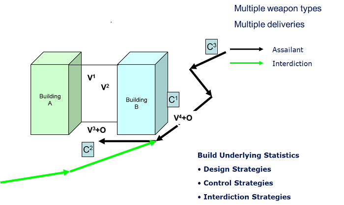

The above sketch illustrates a number of aspects to the analysis of threat on buildings. First, the building is often not isolated from adjacent buildings and this presents a 3D threat. Secondly, whilst there are single vulnerabilities, these often cluster around other points with opportunities for attack, whose exploitation is highly dependent on the weapon type and mode of delivery chosen by the assailants.
An examination of urban building groups or even single buildings typically reveals that all urban space is reducible to set street and facade geometries, which conform to distinct linear patterns. 3D Vulnerability Analysis is a set of techniques for looking at complex security and risk problems where there are a multitude of potential threats. Many of the potential threats are not apparent, as these arise from consequences which are not immediately visible.
"Vulnerability is based on an analysis of the form of a structure. The emphasis in this theory is on quantifying inherent weaknesses in a structure."
"A threat which is able to exploit any of these weaknesses will lead to undesirable consequence and risk. Risk can be minimized by taking remedial action either for the threat or the inherent weakness."
Agarwal, J. England, J.C. Blockley, D.I. Vulnerability Analysis of Structures, JCSS and IABSE Workshop on Robustness of Structures.
In many respects, 3D Vulnerability Analysis covers the interaction between the physical and people aspects (in much the same way as the analysis methodology being used in the IT world) where the emphasis is on connections and asset visualizations.
The microsimulation approach combines building structures and environments with human factors, namely the behaviour, and movement of people and objects, such as vehicles in urban spaces. The "transport" and "motivation" modules allow for simulation of control and interdiction strategies against building design options.